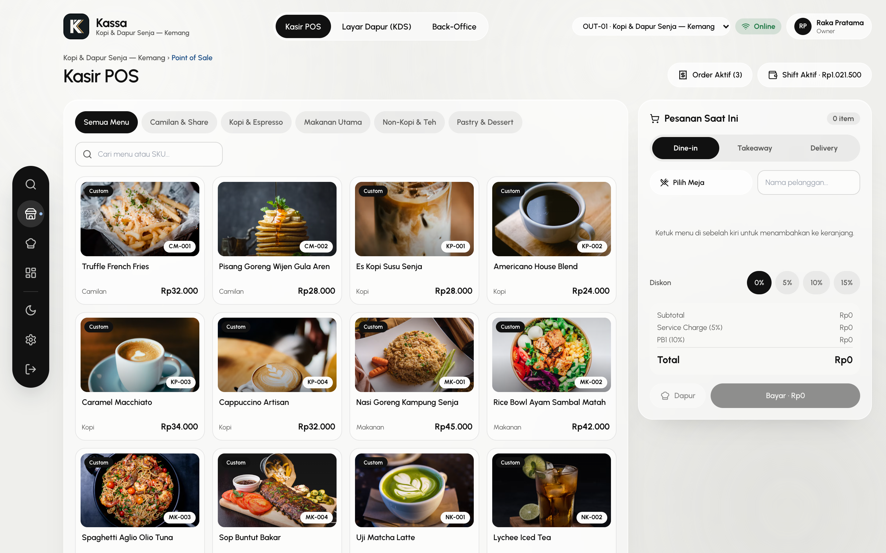
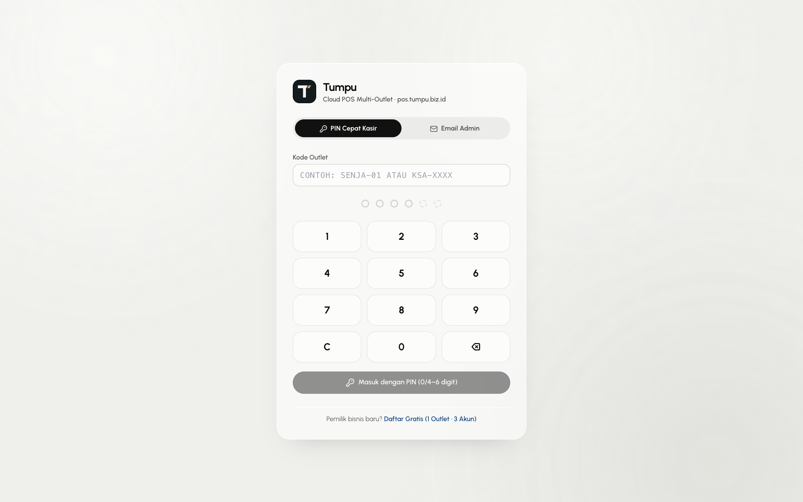
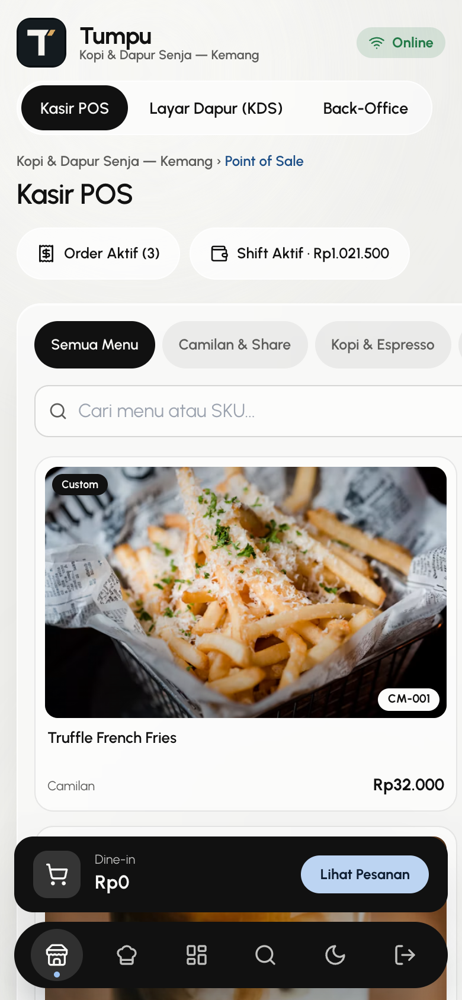
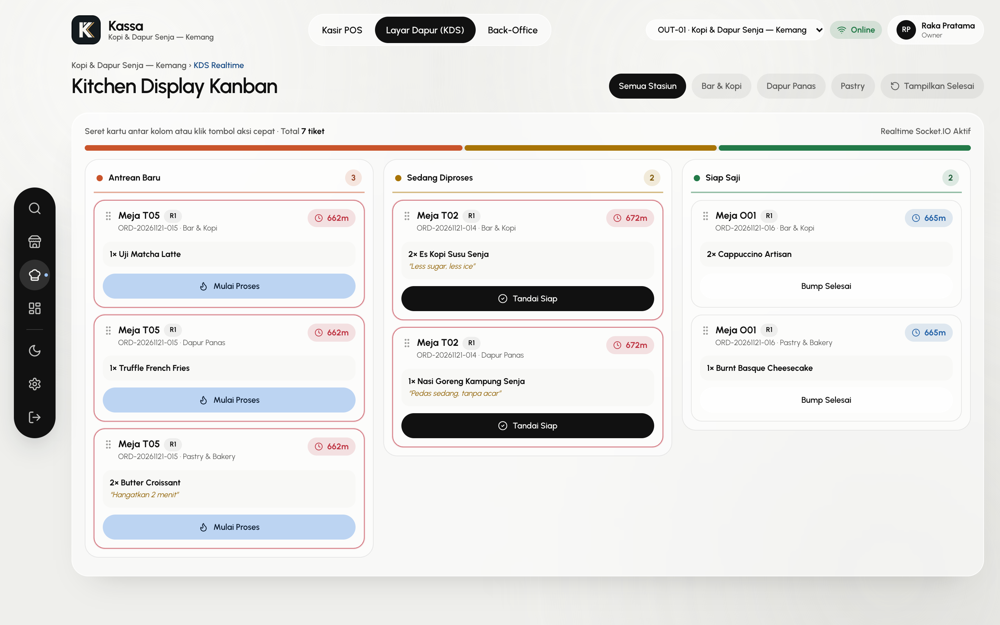
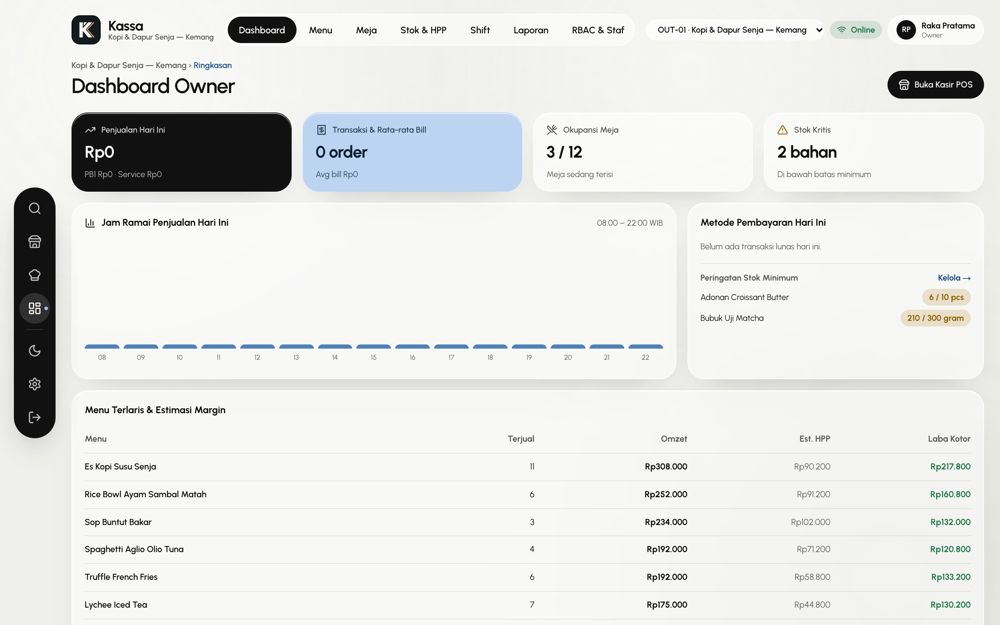
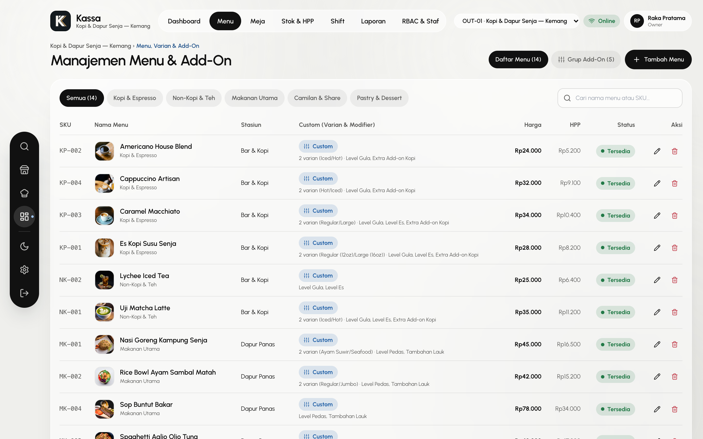
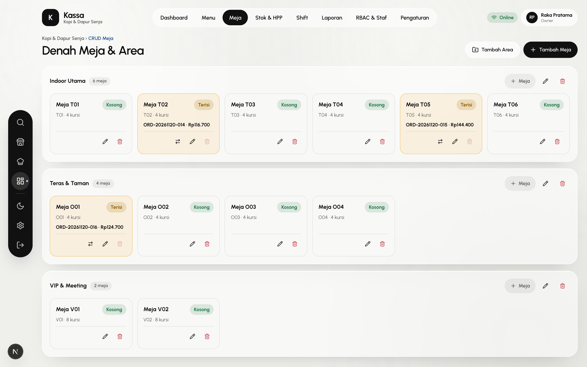
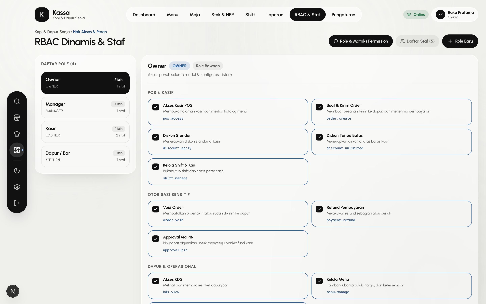
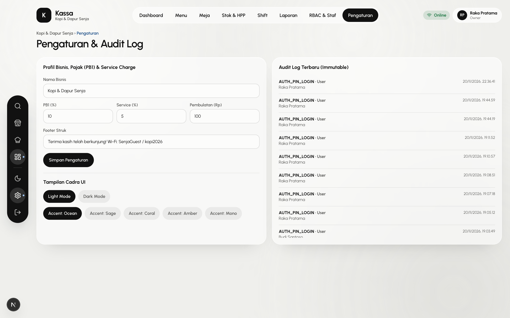

Panduan Operasional
Tumpu POS Cafe & Rumah Makan
Buku panduan lengkap untuk Owner, Manager, Kasir, dan Tim Dapur/Bar dalam mengoperasikan Tumpu POS, Kitchen Display Kanban realtime, manajemen menu & add-on dinamis, stok bahan baku fleksibel & HPP, mode offline, serta RBAC dinamis.

Daftar Isi
Login & Hak Akses Per Role
Tumpu mendukung dua cara masuk di halaman /login: PIN Cepat (4–6 digit) untuk kasir dan tim dapur
agar pergantian shift berlangsung dalam hitungan detik, serta Email & Password untuk Owner/Manager.
| Peran | Nama Demo | PIN Cepat | Akses Layar | |
|---|---|---|---|---|
| Owner | Raka Pratama | owner@senja.id | 1111 | Semua modul (POS, KDS, Admin, RBAC, Pengaturan) |
| Manager | Nadia Kusuma | manager@senja.id | 2222 | POS, KDS, Dashboard, Menu, Meja, Stok, Shift, Laporan + Approval PIN |
| Kasir (Pagi) | Dina Kartika | kasir@senja.id | 1234 | Khusus Kasir POS (/pos) |
| Kasir (Sore) | Sinta Dewi | sinta@senja.id | 3456 | Khusus Kasir POS (/pos) |
| Dapur / Bar | Budi Santoso | dapur@senja.id | 5678 | Khusus Layar Dapur KDS (/kds) |

⌘K Finder) otomatis menyesuaikan izin role.
Kasir tidak dapat melihat maupun membuka /admin atau /kds.
Operasional Kasir POS & Mode Offline
2.1 Alur Harian Kasir
- Buka Shift: Klik tombol Buka Shift di pojok kanan atas, masukkan Modal Kas Awal (mis. Rp500.000), lalu simpan.
- Pilih Tipe Order & Meja: Pilih Dine-in (ketuk Pilih Meja), Takeaway, atau Delivery. Sistem mengunci meja agar tidak ada 2 order aktif di meja yang sama.
- Tambah Menu: Ketuk foto menu. Menu bertanda Custom otomatis membuka popup pilihan Varian, Add-On, dan Catatan Dapur; menu lainnya masuk keranjang dalam 1 ketuk.
- Kirim ke Dapur atau Langsung Bayar: Klik Dapur untuk mengirim pesanan ke KDS tanpa membayar dulu (Hold Bill), atau klik Bayar untuk langsung menyelesaikan transaksi.
- Pembayaran & Struk Thermal: Pilih Tunai (hitung kembalian otomatis), QRIS Manual, Kartu/EDC, atau Transfer. Perhitungan default: Service Charge 5% → PB1 10% → Pembulatan Rp100. Setelah lunas, pratinjau struk thermal 58/80mm muncul siap cetak.
- Void Order (Sensitif): Membatalkan order aktif di tombol Order Aktif wajib memasukkan PIN Approval Manager/Owner + alasan tertulis (tercatat permanen di Audit Log).
- Tutup Shift (Z-Report): Di akhir shift, klik tombol Shift Aktif, masukkan hitungan kas fisik aktual di laci, lalu simpan. Sistem menghitung selisih (Expected vs Actual) secara otomatis.
2.2 Tampilan Mobile & Mode Offline
- Responsif HP & Tablet Portrait: Di layar kecil, keranjang otomatis tampil sebagai Floating Checkout Bar di bagian bawah yang membuka Slide-up Bottom Sheet saat diketuk, lengkap dengan tombol
+/-ramah sentuh (44px). - Saat Internet Mati (Offline): Indikator di pojok kanan atas berubah menjadi Offline. Kasir tetap dapat menerima pembayaran Tunai — transaksi tersimpan aman di browser (IndexedDB) dengan nomor struk prefiks
OFF-. - Sinkron Otomatis: Begitu koneksi internet kembali normal, seluruh antrean offline otomatis dikirim ke server secara idempotent (anti-duplikasi) dan stok bahan baku otomatis menyesuaikan.

Kitchen Display System (KDS Kanban)
Halaman /kds menampilkan seluruh pesanan dari kasir secara realtime (Socket.IO) dalam bentuk papan
Kanban 3–4 Kolom: Antrean Baru → Sedang Diproses → Siap Saji → (opsional) Selesai / Recall.
- Filter Stasiun: Tim Barista cukup memilih Bar & Kopi, tim Chef memilih Dapur Panas, dan tim Bakery memilih Pastry — setiap tiket hanya menampilkan item milik stasiunnya.
- Drag & Drop atau 1-Tap: Di layar desktop, seret kartu tiket ke kolom berikutnya; di layar sentuh dapur, cukup ketuk tombol aksi (Mulai Proses → Tandai Siap → Bump Selesai).
- Peringatan SLA: Setiap tiket memiliki penghitung waktu berjalan. Jika melewati batas SLA stasiun (mis. Bar 6 menit, Dapur 12 menit), kartu otomatis menyala dengan border merah.
- Recall Tiket: Aktifkan tombol Tampilkan Selesai jika ingin menarik kembali tiket yang tidak sengaja ter-bump.

Dashboard Owner & Laporan Penjualan
Di halaman /admin, Owner dan Manager mendapatkan gambaran kesehatan bisnis secara instan:
- 4 Kartu KPI Utama: Total Penjualan Hari Ini (beserta rincian PB1 & Service Charge), Jumlah Transaksi & Rata-rata Bill, Okupansi Meja aktif, dan Jumlah Bahan Baku Kritis.
- Grafik Jam Ramai (08:00–22:00): Memudahkan penjadwalan shift staf pada jam puncak (pagi, makan siang, sore).
- Rincian Metode Bayar & Alert Stok Minimum: Memantau porsi Tunai vs QRIS/EDC/Transfer serta daftar bahan baku yang perlu segera di-restock.
- Laporan & Ekspor CSV (
/admin/reports): Ringkasan omzet bersih, total diskon, total HPP, estimasi laba kotor, jumlah void, dan tombol Ekspor CSV untuk diolah di Excel/Google Sheets.

Manajemen Menu, Grup Add-On & Denah Meja
5.1 Menu, Foto HD & Grup Add-On Dinamis (/admin/menu)
- Tambah / Edit / Hapus Menu: Atur SKU, Nama, URL Foto (dengan live preview), Kategori, Stasiun KDS, Harga Dasar, HPP, Varian Ukuran/Penyajian, serta centang Grup Add-On yang berlaku khusus untuk menu tersebut.
- Indikator Custom vs 1-Tap: Menu yang memiliki >1 varian atau ≥1 grup add-on otomatis bertanda Custom di Admin maupun di Kasir POS.
- Tab Grup Add-On: Klik tab Grup Add-On untuk menambah/mengubah grup baru (mis. Topping Dessert, Extra Saus), atur Wajib/Opsional, batas Min–Maks pilihan, dan daftar opsi beserta harga tambahannya.

5.2 CRUD Area, Meja & Pindah Meja (/admin/tables)
Kelola area ruangan (Indoor, Teras, VIP) dan daftar meja beserta kapasitas kursinya. Meja yang sedang terisi menampilkan nomor order & nominal tagihan, serta memiliki tombol Pindah Meja untuk memindahkan tamu ke meja kosong lain.

Stok Bahan Baku Fleksibel, Resep (BOM) & HPP
Modul /admin/stock dirancang fleksibel untuk berbagai satuan dapur/bar (gram, kg, ons, ml, liter, sdm, sdt, shot, oz, box, botol, tray, hingga satuan bebas seperti pump atau slice).
Langkah Pengisian
- Isi Master Bahan Baku (Tab Bahan Baku → + Tambah Bahan): Pilih Preset Satuan Cepat (mis. Berat kg→gram, Sirup botol→ml 750, Bakery box→pcs 12) atau ketik satuan bebas. Masukkan Harga Beli per Kemasan pada Kalkulator HPP Bahan — sistem otomatis menghitung biaya per satuan dasar.
- Atur Resep (Tab Resep & HPP → Atur Resep / HPP): Tambahkan bahan penyusun 1 porsi menu. Anda bebas memilih satuan takaran (mis.
18 gram,150 ml, atau2 sdm). Sistem otomatis menampilkan konversi, subtotal per baris, Estimasi HPP, dan Margin Kotor (%). - Catat Restock / Waste / Stock Opname (Panel Kanan): Pilih bahan, jenis mutasi, angka, dan Satuan Input (mis. langsung ketik
2 kgatau3 box). Untuk Stock Opname, cukup masukkan jumlah fisik aktual hasil hitung di gudang — sistem menghitung selisihnya otomatis dan mencatat di tab Ledger Mutasi.

RBAC Dinamis, Multi-Staf & Pengaturan Bisnis
7.1 RBAC Dinamis & Multi-Staf (/admin/rbac)
- Role & Matriks Permission: Owner dapat membuat role kustom baru (mis. Supervisor Shift) dan mencentang/mencabut 17 izin secara live tanpa restart server.
- Daftar Staf: Satu role dapat memiliki banyak staf (contoh: Dina Kartika sebagai Kasir Shift Pagi PIN
1234dan Sinta Dewi sebagai Kasir Shift Sore PIN3456). Owner dapat menambah akun, mengganti role, reset password/PIN, atau menonaktifkan akun kapan saja.

7.2 Pengaturan Pajak, Tema & Audit Log (/admin/settings)
Atur nama bisnis, tarif PB1 (%), Service Charge (%), Pembulatan (Rp), teks footer struk, mode tampilan Light/Dark, serta 5 aksen warna Tumpu (Ocean, Sage, Coral, Amber, Mono). Di sisi kanan tersaji Audit Log Immutable yang merekam seluruh aksi penting (login, buka/tutup shift, void, refund, waste, perubahan RBAC).

Pintasan Keyboard & Troubleshooting Cepat
8.1 Pintasan Keyboard
| Pintasan | Fungsi |
|---|---|
| ⌘K atau Ctrl+K | Membuka Quick Finder untuk melompat cepat ke halaman yang diizinkan role |
| Esc | Menutup Quick Finder / modal yang sedang terbuka |
8.2 Troubleshooting Umum
| Kendala | Solusi Cepat |
|---|---|
| Internet putus saat jam sibuk | Tetap layani transaksi Tunai di /pos (struk keluar dengan prefiks OFF-). Saat Wi-Fi kembali menyala, sistem otomatis menyinkronkan antrean ke database tanpa duplikasi. |
| Kasir salah input order yang sudah dikirim ke dapur | Buka Order Aktif di /pos → klik Void → masukkan PIN Manager (2222) / Owner (1111) + alasan. Aksi tercatat di Audit Log. |
| Staf lupa PIN atau Password | Owner masuk ke /admin/rbac → tab Daftar Staf → klik ikon pensil (Edit Akun) → isi Password/PIN baru lalu simpan. |
| Struk thermal terpotong / tidak pas 80mm | Pada dialog print browser, pilih printer thermal 58/80mm, set Margins: None, dan matikan Headers and footers. |
| Perubahan izin RBAC belum terlihat di layar staf | Minta staf me-refresh halaman (atau otomatis tersinkron saat berpindah halaman via /auth/me). |
Docs/ pada repository proyek.